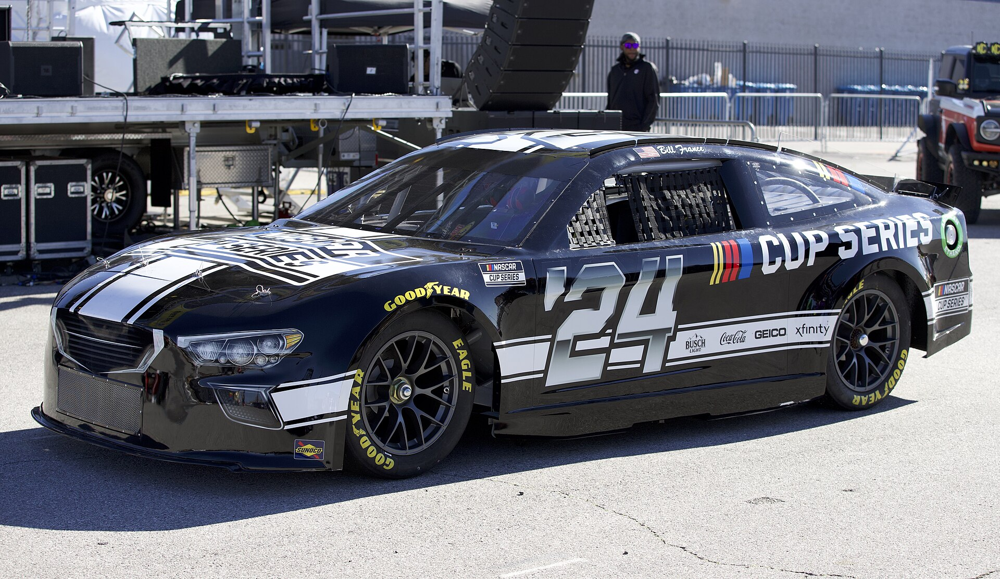

ภาพรวม
American Motorsportคืออะไร?

American Motorsport มีเอกลักษณ์เฉพาะตัวที่แตกต่างจากยุโรปอย่างชัดเจน เริ่มจาก Oval Racing ที่แข่งบนสนามรูปไข่แทนสนาม Circuit
NASCAR คือ Bible ของมอเตอร์สปอร์ตอเมริกัน ใช้รถที่มีรูปทรงใกล้เคียงรถ Stock ในโชว์รูม เสียง V8 ดังสนั่น แฟนสรวลเสเฮฮา ดื่มเบียร์และเชียร์รถหมายเลขโปรด
IndyCar คือ Open-Wheel Race สไตล์อเมริกัน แข่งทั้ง Oval และ Road Course รวม Indianapolis 500 ที่ยิ่งใหญ่ที่สุดในโลก — เรียกว่า "The Greatest Spectacle in Racing"
